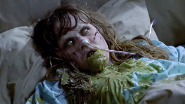
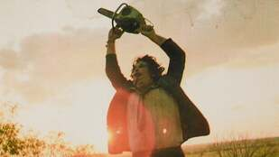

As the societal optimism of the early post-war years gave way to widespread disillusionment, economic instability, and social upheaval, horror cinema in the 1970s underwent a seismic shift. The genre shed much of its earlier restraint, embracing a grittier, more visceral, and often deeply unsettling reflection of a turbulent world. The monsters were no longer just from outer space or ancient tombs; they were emerging from within society, and even within the self.
The 1970s marked a true turning point, often called a revolution in horror. Filmmakers, less constrained by censorship and more willing to explore darker themes, moved away from classic monsters toward psychological depth and shocking, visceral terror. This decade saw the rise of demonic possession films that tapped into spiritual anxieties, the birth of the modern slasher subgenre with its relatable suburban fears, and sci-fi horror that took terror to new, isolated frontiers. Realism, intense violence, and challenging narratives became hallmarks of this transformative era.
William Friedkin's "The Exorcist" wasn't just a film; it was a cultural phenomenon that terrified audiences worldwide. Its unflinching depiction of demonic possession, combined with profound questions of faith and the nature of evil, pushed the boundaries of mainstream horror. The film’s shocking imagery and intense psychological drama had a lasting impact, proving horror could be both commercially successful and critically provocative, opening doors for more adult-oriented horror.
Tobe Hooper’s raw, pseudo-documentary style lent a terrifying verisimilitude to this tale of a cannibalistic family. While surprisingly less gory than its reputation suggests, its unrelenting intensity, disturbing atmosphere, and the iconic Leatherface redefined cinematic brutality. It demonstrated the power of low-budget filmmaking to create deeply unsettling horror that reflected a sense of societal breakdown and the darkness lurking in rural America.
John Carpenter’s independent masterpiece introduced Michael Myers, a seemingly motiveless and unstoppable killer, effectively launching the slasher subgenre into mainstream consciousness. Its use of Steadicam, POV shots, and an iconic synth score created an atmosphere of relentless suburban dread. "Halloween" codified many slasher tropes, including the "final girl," and its commercial success paved the way for a wave of similar films in the following decade.

Ridley Scott brilliantly merged science fiction with "haunted house" horror in "Alien." H.R. Giger's nightmarish Xenomorph design and the film’s claustrophobic, industrial setting created a terrifying vision of cosmic dread. It not only introduced one of cinema's most iconic monsters but also a groundbreaking action heroine in Ripley, setting a new standard for creature features and sci-fi horror's potential for suspense and adult themes.

The 1970s was a truly revolutionary period for horror, tearing down old conventions and building new nightmares that resonated with contemporary anxieties. The decade's willingness to explore graphic violence, psychological depths, and uncomfortable social truths redefined what horror could be, setting the stage for the subgenre booms and iconic villains that would dominate the 1980s.
| Nombre | ID | Carrera | Correo |
|---|---|---|---|
| Maria Jose Arévalo | 1094044725 | Jurisprudencia | mariaj.arevalo@urosario.edu.co |
| Daniela Cortes Rodriguez | 1095550727 | Jurisprudencia | daniela.cortesro@urosario.edu.co |